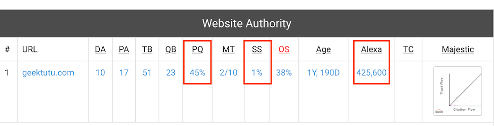

博客折腾记(五) - 友链这件事，没那么简单
友链，链接有趣的灵魂
每一篇文章背后，都有一个有趣的灵魂。
这几天有童鞋找我交换友链，我大部分都答应了。有少数没有通过，完全靠直觉评价。
我不想简单粗暴地堆友链。我的友链页做得很简洁，友链列表展示在最显眼的位置。虽是内页链接，但也具备较高的辨识度，希望大家能从我的友链页发现一些有趣的灵魂。
以后友链肯定会越加越多，所以我想找一个客观的评价方式。
对站点价值的一些分析
对我而言，原创是我最为关注的一个指标。我这个小站，文章只有十几篇，但是每一篇都是一个字一个字敲出来的。我在《原创资格是争取来的》这篇文章里记录了我这几周为争取每一篇文章的原创资格而做的努力。我不指望博客能给我带来多大的收益，网站运行一年半，我收到的打赏还没有超过50块。但是被 Google 认定为抄袭站是我最难过的一件事。更难过的是，这件事直到我6月初申请 Adsense 时才知道，无奈之下只能删除了80%被认定为抄袭的文章，只保留了6篇，在过去几周保持极高更新频率的努力之下，才几乎摘掉了抄袭这顶帽子。
拒绝和任何聚合站、采集站、转载站站长做朋友，这是本站交换友链的宣言。为了避免误会，声明一下，这里的聚合站，不包括只获取标题和摘要的推荐站点，我觉得这种推荐是一件双赢的事，反感的是全文爬取的聚合站点。
对站点价值而言，原创是一个很重要的指标，那其他的指标呢？
我找到了2个工具，做了一些简单的分析。在分析之前，先介绍几个概念。
- PR Quality：PR质量，分为 very weak，weak，good，strong，very strong等。佩奇排名(Page Rank, PR)是很早以前Google采用的网站排名算法，0-10，共11档，这个算法主要考虑外链数量，因此容易作弊，Google很早就不再公布网站的PR值，但是算法是公开的，很多分析网站计算了PR值，也衍生出了 PR Quality 等类似的指标。所以该值仅作参考，向PR致敬。
- Alexa 排名：网站的世界排名，第一名是Google，第四名是Baidu，第六名QQ。
- Moz PQ：高质量外链百分比(Percentage of quality backlinks, PQ)，用来评价外链的质量。Moz是一个著名的网站分析软件，Moz PQ 即 Moz 记录的高质量外链与所有外链的比例。垃圾站的外链不如不要，会影响该指标。
- Moz SS：垃圾评分(Moz Spam Score, SS)，评价与其他站点的相似程度。分数越高，说明站点抄袭度越高，越容易受到搜索引擎的惩罚。

| 站点 | 网页数 | PR质量 | 高质量外链比 | 垃圾评分 | 世界排名 |
|---|---|---|---|---|---|
| 21亿 | 9,very strong | 82% | 1% | 1 | |
| Geektutu | 52 | 1,weak | 45% | 1% | 42万 |
| 童鞋1 | 216 | 1,weak | 0% | 17% | 133万 |
| 童鞋2 | 1120 | 2,weak | 10% | 11% | 142万 |
| 童鞋3 | 1427 | 2,weak | 60% | 28% | 20万 |
| 某聚合站 | 20万 | 1,very weak | 0% | 20% | 262万 |
以上数据来自于Check Page Rank和Bulk Check Page两个站点分析网站。
我的结论
PR值仅考虑外链的数量，不考虑外链的质量，非常容易买卖，作弊，因而该指标在搜索中的作用越来越弱化。而高质量的外链比作用也越来越大，与 Moz PQ 类似，Google 利用信任流量(Trust Flow)和引用流量(Citation Flow)，即常说的TF值和CF值，来判断网页的外链质量。一个站点拥有权威网站的外链越多，TF值也会越大，Google 的TF值高达98。将PR值列在这里，仅是为了向这个古老经典的算法致敬。
我没有尝试获取太多站点的数据，但是我觉得这几个站点的比较，足以帮助我判断一个站点是否值得加友链。
1) 网站内容，质量大于数量
我的站点只有52个页面，但是排名远超拥有20万页面的聚合站，20万个页面，262万的排名，站长实在是太不称职了，估计被举报投诉的次数不少。原创的文章更容易被引用，该聚合站的文章的外链数其实非常低，PR Quality 竟然是 very weak ，只比还没资格加入排名的站点好一点。想想也合理，谁会在自己的博客中引用一个聚合站的地址呢？
2) 原创度非常重要
在我查询的所有网站中，很少见到垃圾评分(Spam Score)高，但排名高的网站。我的站点垃圾评分只有1%，Alexa 排名也超过了很多内容比我多的博主。
3) 高质量的外链比数量更重要
我比较了童鞋2和童鞋3的网站，网页数量和 PR 值是相近的，但童鞋3的高质量外链比(PQ)高达60%，童鞋2的仅有10%，在垃圾评分比童鞋2高的情况下，童鞋3排名20万，童鞋2排名142万。而我的网站，虽然 PR 值较低，但是排名比童鞋2也高很多。打个比方，高质量的外链代表一个好文凭，即使你能力较弱，但是你的好文凭足以给你加分不少。可能这也是为什么童鞋3在垃圾评分那么高的情况下，仍有不错的排名吧。
Alexa 排名主要看流量，流量一般来自三个地方：搜索引擎、外链和直接访问。搜索引擎愿意收录你的文章，并且给一个好的排名，这要求原创度高，即垃圾评分必须保持在很低的水平，有一种垃圾评分的算法是18分制，正常网站在 1/18-4/18 之间，超过 5/18 就容易受到搜索引擎的惩罚；流量大的外链，那必然是高质量的外链，有稳定的读者群；直接访问要求更高，网站要有足够有价值的内容，才能让别人记住你的域名。三点都能做好，必定是一个非常不错的站点了。
尊重别人，也尊重自己
人的精力是有限的，对独立博主来说，一天一篇文章，10年也只能写3000篇。强如知名博主阮一峰，接近5000篇文章，PR 到了5也是上限了。所以加友链不必太过注重对方写了多少篇文章，而是应当关注对方的高质量外链比与垃圾评分。从这两个指标，最能看到一个博主是否在用心经营他的站点。
上一篇的文章标题是，《原创资格是争取来的》。如果你想和我交换友链，我不在乎你有多少篇文章，10篇或是100篇，我希望你能认真地对待你的博客，写原创有价值的文章，积极地维护自己的原创权，不要让搜索引擎给你打上「抄袭」的标签。
如果已经被打上了标签，长痛不如短痛，删掉所有疑似被抄袭或者相似度高的文章，这是最好的方法，重新思考你的博客的独特价值。
如果你没准备好，也不用太过着急到处留言换友链。一开始换到价值不高的友链还不如不换，尊重别人，以及尊重你自己。
最后一个简单声明，一个网站的价值，由成千上万个因素决定，需要采集大量的数据才可能分析出准确的结论。个人观点，仅供参考。极客兔兔的所有文章欢迎链接分享，禁止全文转载。
上一篇 « 博客折腾记(四) - 原创资格是争取来的 下一篇 » TensorFlow 2.0 (九) - 强化学习 70行代码实战 Policy Gradient